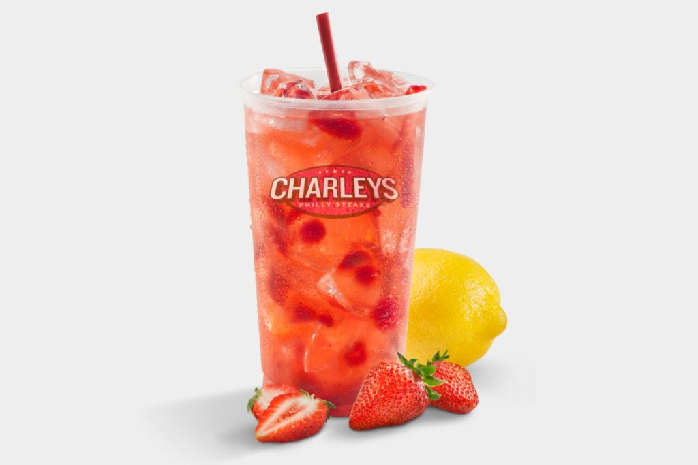

Cheesesteaks
World famous Philly style cheesesteaks that are sure to make you fall in love with fresh cooked sandwiches.

Gourmet Fries
Prepared with Natural-Cut Potatoes—Delicious on Their Own or Loaded with Toppings

Real fruit Lemonades
All-Natural Lemonade Prepared w/ Real Fruit